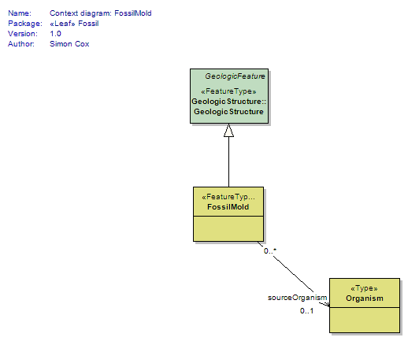
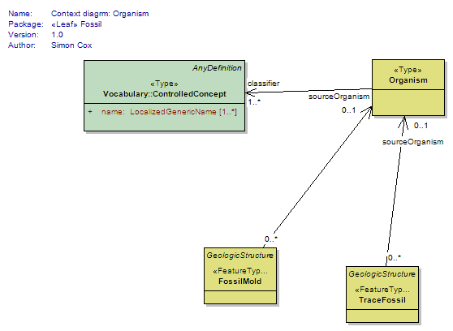
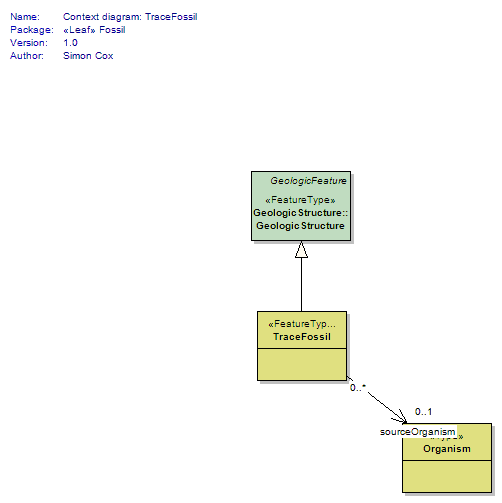

Package GeoSciML/Fossil
The GeoSciML Fossil package contains classes for representing Fossils.
These may be: FossilMold or TraceFossil.
They are linked to living or once living things by the Organism class.
It is recommended that a fossil(s) behaving as a "material" should be described asa "constituent part" of an earth material.
Class Summary |
|
| <<FeatureType>> Classes | |
FossilMold
<<FeatureType>>
|
A fossil that is a negative image of some organism or part of an organism. Considered a structure because the mold has the same relationship to its material substrate that a geologic structure does--the mold is in the substrate, it is not the substrate itself. |
TraceFossil
<<FeatureType>>
|
A sedimentary structure produced by the life activities (other than growth) of some organism. Neuendorf et al. (2005) restrict to structures produced by animals; further consideration needed on how to deal with structures produced by other life-forms. |
| <<Type>> Classes | |
Organism
<<Type>>
|
Broad class to represent any living or once living thing. This is the connection to taxonomy/biology for fossils. |
Tagged Values |
||
| Tag | Value | Notes |
| xsdDocument | fossil.xsd | Description: Relative path to XML Schema document corresponding to this package. |
UML Diagram: Context diagram: FossilMold

UML Diagram: Context diagrm: Organism

UML Diagram: Context diagram: TraceFossil
